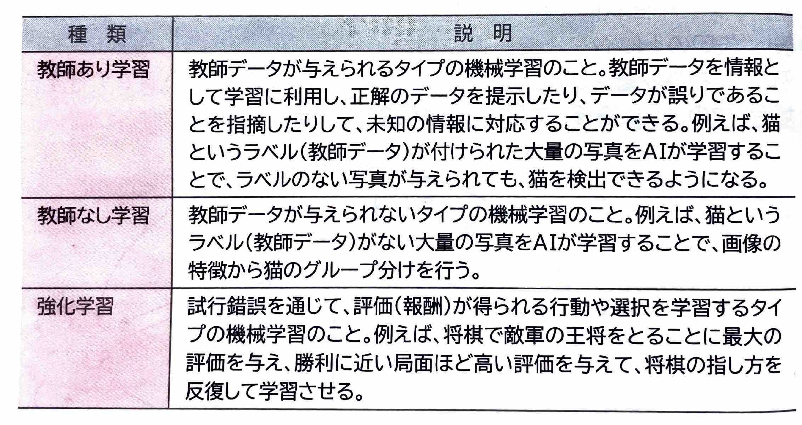
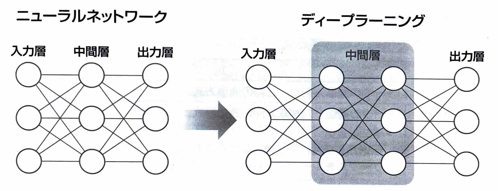
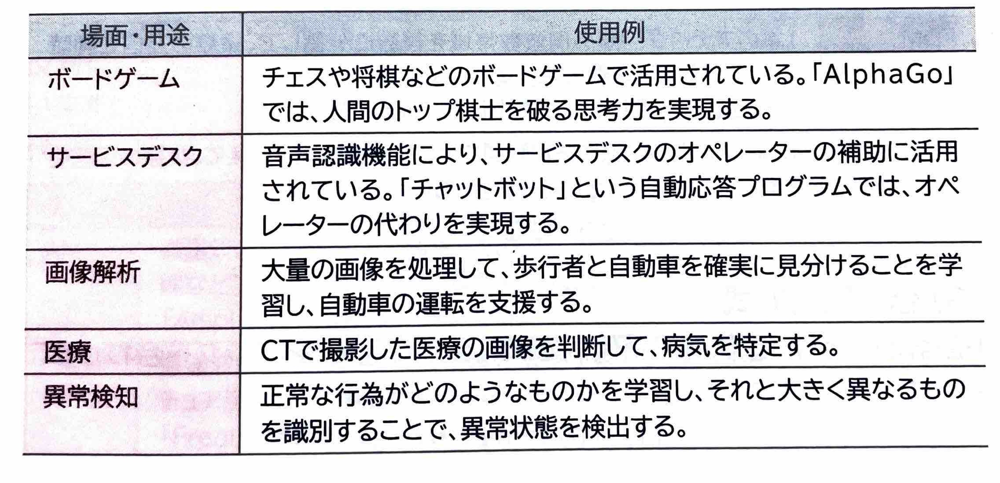

【 AI(人工知能) 】
｢AI｣とは、人間の脳がつかさどる機能を分析して、その機能を人工的に実現させようとする試み、またはその機能を持たせた装置やシステムのことです。｢人工知能｣ともいいます。
(1)AIの歴史
AIは古くから研究されており、現在は第3次AIブームといわれています。
(2)機械学習
｢機械学習｣とは、明示的にプログラムで指示を出さないで、コンピュータに学習させる技術のことです。人間が普段から自然に行う学習能力と同等の機能を、コンピュータで実現することを目指します。
機械学習では、人間の判断から得られた正解に相当する｢教師データ｣の与えられ方によって、次のように分類されます。

(3)ディープランニング
機械学習の中でも｢ディープランニング｣という手法が成果を上げ、注目されるようになりました。ディープランニングは、日本語では｢深層学習｣を意味し、｢ニューラルネットワーク｣の仕組みを取り入れています。
具体的には、神経細胞を人工的に見立てたもの同士を4階層以上のネットワークで表現し、さらに人間の脳に近い形の機能を実現する技術です。ニューラルネットワークの考え方は、第1次AIブームでも確立していましたが、近年のコンピュータの高速化などを背景に、このニューラルネットワークを取り入れたディープランニングによって、AIは大きく進化しました。

ディープランニングでは、人間が与える｢特徴量｣などのヒントを使わずに、AIがデータと目標の誤差を繰り返し計算して、予測したものに適した特徴量そのものを大量のデータから自動的に学習します。これにより、人工的に人間と同じような解答を導き出すことが出来ます。
(4)AIの活用
AIは、様々な場面や用途で活用されています。
